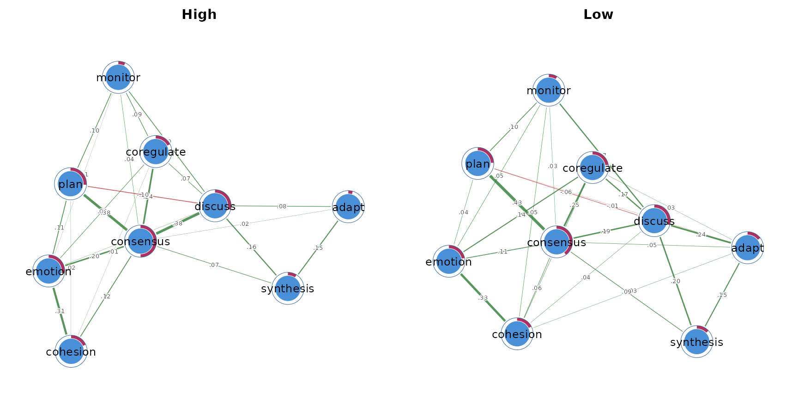
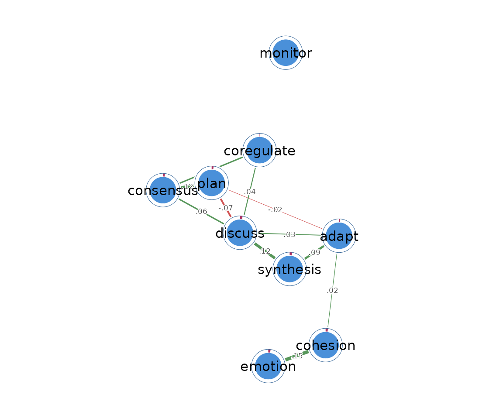

Networks of regulation actions from event logs with the psychnets R package
Mohammed Saqr
University of Eastern FinlandSonsoles López-Pernas
University of Eastern FinlandSource:
vignettes/group-networks-from-event-data.Rmd
group-networks-from-event-data.RmdDigital learning environments produce event logs that identify the learner, the action performed and the time of the event. In collaborative tasks, these records may capture planning, monitoring, discussion, consensus building and emotional regulation. Researchers often want to know whether such actions tend to occur together, rather than merely how frequently each action occurs. Psychological network analysis offers a way to examine these patterns by representing actions as nodes and their conditional associations as edges. This approach treats relationships among observed variables as the object of analysis, while avoiding the assumption that an association represents a causal influence (Borsboom et al., 2021).
To construct a psychological network from an event log, events must first be aggregated into comparable observations. For example, counting each student’s actions produces a table with one row per student and one column per action. A Gaussian graphical model then estimates partial correlations between action frequencies, accounting for the other actions in the model (Epskamp et al., 2018). This can reveal associations that are not apparent from separate frequency summaries. However, aggregation changes the question being answered. A network comparing students’ total counts describes differences between students, whereas a network based on deviations from each student’s usual session counts describes variation within students. These levels should not be interpreted interchangeably, a distinction also relevant to the interpretation of longitudinal models (Hamaker et al., 2015).
Psychological and related network approaches have been used in education to investigate the interconnections among learning activities and regulatory processes (Saqr et al., 2024). For example, network analysis has been applied to individual monitoring events and phases of regulation in collaborative learning (Malmberg et al., 2022). Work on self-regulation has also framed learners’ behaviour as a complex, evolving system (Saqr & López-Pernas, 2024). These applications make the level of analysis especially important: group-level patterns of engagement need not reflect the processes of individual learners (Saqr, 2024). Networks based on event frequencies are therefore useful descriptive tools, but they do not by themselves establish the order of actions or the mechanisms that produce them.
This article demonstrates how to use psychnet() in
psychnets to estimate networks of regulation actions from
an event log. We first construct a network from each student’s complete
action history and examine its edges and numerical convergence. We then
compare networks estimated separately for high and low achievers.
Finally, we divide the histories into sessions, estimate a network of
within-student deviations and separate within-student from
between-student associations. The example uses synthetic data, so the
results illustrate interpretation and reporting rather than provide
evidence about actual learners.
The model
For actor , occasion and action , the frequency is the number of matching events,
Without sessions, each actor contributes one frequency vector based on the full observation period. Associations in this network therefore describe differences between actors. With sessions, each actor contributes several frequency vectors, allowing variation across occasions to be examined. Subtracting the actor’s mean, , gives the within-actor deviations, and the actor means carry the between-actor part. Each network is a Gaussian graphical model estimated by the EBIC graphical lasso. An edge represents a partial correlation between two action frequencies conditional on the other seven actions. Its sign indicates the direction of the association, and its magnitude indicates its estimated strength. Neither a positive nor a negative edge establishes causation.
Data
group_regulation_long, from the optional
tna package, is a synthetic log of students’ regulation
actions during collaborative learning, with 27,533 events from 2,000
students.
-
Actor:
Actor, the student identifier. -
Action:
Action, one of nine regulation actions:adapt,cohesion,consensus,coregulate,discuss,emotion,monitor,planandsynthesis. These are the network nodes. -
Time:
Time, the timestamp of the event, used to divide each history into sessions. -
Grouping:
Achiever, high or low achievement, with 1,000 students in each. -
Other columns:
Group(collaboration group) andCourse, not used here.
data("group_regulation_long", package = "tna")
event_log <- data.frame(group_regulation_long)
head(event_log)
#> Actor Achiever Group Course Time Action
#> 1 1 High 1 A 2025-01-01 08:27:07 cohesion
#> 2 1 High 1 A 2025-01-01 08:35:20 consensus
#> 3 1 High 1 A 2025-01-01 08:42:18 discuss
#> 4 1 High 1 A 2025-01-01 08:50:00 synthesis
#> 5 1 High 1 A 2025-01-01 08:52:25 adapt
#> 6 1 High 1 A 2025-01-01 08:57:31 consensusEach row records one action by one student at a particular time.
Multiple rows for the same student make up that student’s event history.
psychnet() recognises the data as an event log when the
actor argument identifies the student column; the action
column is Action by default. As the example is synthetic,
its frequencies and associations should not be generalised to a
population of students.
Which actions co-occur across students?
With actor = "Actor", psychnet() counts
each student’s actions and estimates a graphical lasso network of the
counts.
actor_net <- psychnet(data = event_log, actor = "Actor")
summary(actor_net)
#> <psychnet> glasso network
#> nodes: 9 edges: 28 (undirected)
#> lambda: 0.008001 gamma: 0.5
#> optimality (KKT residual): 3.19e-11
#> edge weight: range [-0.154, 0.434], mean 0.104
as.data.frame(actor_net)
#> from to weight
#> 1 adapt cohesion 0.028340228
#> 2 cohesion consensus 0.104456298
#> 3 adapt coregulate 0.083642924
#> 4 cohesion coregulate 0.024349135
#> 5 consensus coregulate 0.225910826
#> 6 adapt discuss 0.171392767
#> 7 cohesion discuss 0.027060667
#> 8 consensus discuss 0.329359608
#> 9 coregulate discuss 0.115303519
#> 10 adapt emotion -0.071536621
#> 11 cohesion emotion 0.348144853
#> 12 consensus emotion 0.173584152
#> 13 coregulate emotion 0.102035538
#> 14 discuss emotion 0.044301431
#> 15 adapt monitor 0.027444520
#> 16 coregulate monitor 0.063156831
#> 17 discuss monitor 0.157029937
#> 18 emotion monitor 0.037567027
#> 19 consensus plan 0.434452415
#> 20 coregulate plan -0.007036661
#> 21 discuss plan -0.154478241
#> 22 emotion plan 0.072573204
#> 23 monitor plan 0.146170265
#> 24 adapt synthesis 0.188381634
#> 25 consensus synthesis 0.079776529
#> 26 coregulate synthesis 0.007569019
#> 27 discuss synthesis 0.186580959
#> 28 emotion synthesis -0.020637713Of the 36 possible connections between nine actions, 28 have non-zero
estimated weights. These range from -0.154 to 0.434. The largest
positive edge connects consensus and plan
(0.434). Students with higher planning counts also tend to have higher
consensus counts after accounting for their frequencies of the other
seven actions. Other relatively strong positive edges connect
cohesion and emotion (0.348),
consensus and discuss (0.329), and
consensus and coregulate (0.226).
The most negative edge connects discuss and
plan (-0.154), indicating an inverse conditional
association across students. This does not imply that discussion
prevents planning. Some retained edges have negligible magnitudes,
including coregulate–plan (-0.007) and
coregulate–synthesis (0.008), and should not
be given substantive interpretations simply because they are non-zero.
Taken together, the comparatively strong connections involving
consensus suggest that consensus building occupies a
prominent position in this estimated network.
Is the fitted network the optimum of its objective?
The graphical lasso solves a penalised optimisation problem. Its solution should satisfy the Karush–Kuhn–Tucker optimality conditions. The certificate measures the remaining violation of these conditions, with a value close to zero indicating that the numerical solution meets them to high precision. This is a check on optimisation, not on whether the model is substantively correct.
certificate(actor_net)
#> method certificate kind certified
#> 1 glasso 3.188688e-11 kkt TRUEThe certificate is and is marked as certified in the output. This indicates that the fitted network satisfies the graphical-lasso optimality conditions to high numerical precision at the selected penalty. It does not establish that the estimated edges would replicate in another sample.
What does the network look like?
cograph::splot() draws the network, with green positive
and red negative edges and a ring showing each action’s
predictability.
cograph::splot(actor_net, psych_styling = TRUE)
The figure shows consensus at the centre, with its thick
edges to plan and discuss, and the
cohesion–emotion pair. Node positions come
from a layout algorithm and carry no statistical meaning.
Do high and low achievers differ?
With group = "Achiever", psychnet()
estimates one network per achievement level and returns them
together.
achievement_nets <- psychnet(data = event_log, actor = "Actor",
group = "Achiever")
achievement_nets
#> <psychnet_group> 2 networks by Achiever (method: glasso)
#> group nodes edges n
#> High 9 25 1000
#> Low 9 27 1000
summary(achievement_nets)
#> group nodes edges mean_abs_weight
#> 1 High 9 25 0.1141111
#> 2 Low 9 27 0.1139959The network for high achievers contains 25 edges and the network for low achievers contains 27, each estimated from 1,000 students. Their mean absolute weights are almost identical (0.114 in both). Thus, the average magnitude of the retained edges is very similar, although the number and arrangement of edges differ. Node strength, the sum of the absolute weights of edges connected to a node, provides a further descriptive comparison:
net_centralities(achievement_nets)
#> <psychnet_centrality_group> 2 groups: High, Low
#>
#> --- High ---
#> node strength expected_influence
#> 1 adapt 0.2557087 0.2557087
#> 2 cohesion 0.4572828 0.4572828
#> 3 consensus 1.4481964 1.4481964
#> 4 coregulate 0.4826224 0.4826224
#> 5 discuss 0.9148080 0.7172144
#> 6 emotion 0.7213529 0.7213529
#> 7 monitor 0.3386263 0.3386263
#> 8 plan 0.7092177 0.5116240
#> 9 synthesis 0.3777409 0.3777409
#>
#> --- Low ---
#> node strength expected_influence
#> 1 adapt 0.5044549 0.4798929
#> 2 cohesion 0.5561617 0.5561617
#> 3 consensus 1.2000886 1.2000886
#> 4 coregulate 0.6383543 0.6383543
#> 5 discuss 1.0808622 0.9531748
#> 6 emotion 0.6868285 0.6868285
#> 7 monitor 0.4027815 0.4027815
#> 8 plan 0.6447291 0.4924798
#> 9 synthesis 0.4415186 0.4415186consensus has the highest strength in both groups, at
1.448 for high achievers and 1.200 for low achievers. For low achievers,
discuss has a strength of 1.081. Both adapt
(0.504 versus 0.256) and coregulate (0.638 versus 0.483)
have greater strength in the low-achiever network than in the
high-achiever network. The high-achiever network appears more
concentrated around consensus, whereas several other
actions are relatively more connected in the low-achiever network. These
observations describe estimated networks and do not establish
statistically significant group differences. A formal assessment
requires a network comparison test (net_compare()).
cograph::splot(achievement_nets, psych_styling = TRUE)
The two panels share one layout, so each action has the same position in both.
Which actions co-occur within students?
With time = "Time", psychnet() divides each
student’s history into sessions, starting a new session after a pause
longer than time_threshold seconds, here five minutes. The
timestamps define the sessions only; no lagged or temporal effect is
estimated. With standardize = TRUE, the default, each
session’s counts are centred on the student’s mean, and one network is
estimated from the pooled deviations.
within_net <- psychnet(data = event_log, actor = "Actor", time = "Time",
time_threshold = 300)
summary(within_net)
#> <psychnet> glasso network
#> nodes: 9 edges: 14 (undirected)
#> lambda: 0.0288 gamma: 0.5
#> optimality (KKT residual): 1.30e-12
#> edge weight: range [-0.074, 0.148], mean 0.042
as.data.frame(within_net)
#> from to weight
#> 1 adapt cohesion 0.020792318
#> 2 cohesion coregulate 0.004241206
#> 3 consensus coregulate 0.057999059
#> 4 adapt discuss 0.033506053
#> 5 consensus discuss 0.058347732
#> 6 coregulate discuss 0.038807994
#> 7 cohesion emotion 0.147896226
#> 8 coregulate monitor 0.004845725
#> 9 adapt plan -0.015897821
#> 10 cohesion plan -0.005337637
#> 11 consensus plan 0.116101114
#> 12 discuss plan -0.073852486
#> 13 adapt synthesis 0.089102215
#> 14 discuss synthesis 0.116874946
certificate(within_net)
#> method certificate kind certified
#> 1 glasso 1.296872e-12 kkt TRUEThe within-student network contains 14 edges, compared with 28 in the
network based on students’ complete histories. The selected penalty is
,
compared with 0.0080 for the full-history network. The largest
within-student edge connects cohesion and
emotion (0.148). In sessions where a student has more
cohesion events than their own average, they also tend to have more
emotion events than their own average, conditional on the other actions.
Further positive edges connect
discuss–synthesis (0.117) and
consensus–plan (0.116), while
discuss–plan is negative (-0.074).
The certificate is , indicating a numerically satisfactory graphical-lasso solution. The smaller number of edges and lower maximum weight describe a sparser, generally weaker set of conditional associations than in the full-history network. These differences must be interpreted cautiously because the networks use different observational units and have different selected penalties. In particular, an association between students need not also characterise how a given student varies across sessions.
cograph::splot(within_net, psych_styling = TRUE)
How do the within- and between-student networks compare?
With standardize = FALSE, psychnet() keeps
both parts of the session data: the within-student network of the
deviations and the between-student network of the students’ mean session
counts.
multilevel_nets <- psychnet(data = event_log, actor = "Actor", time = "Time",
time_threshold = 300, standardize = FALSE)
multilevel_nets
#> <psychnet_multilevel> glasso networks (within + between)
#> actors: 2000 occasions: 12305
#> within : 9 nodes, 14 edges
#> between: 9 nodes, 24 edgesApplying the five-minute session rule to the histories of 2,000 students produces 12,305 sessions. The decomposition yields 14 edges in the within-student network and 24 in the between-student network of average session counts. These are two distinct sources of association: deviations within students and differences between students’ average session profiles. The between-student component has more retained edges in this fitted model, but edge counts alone do not demonstrate stronger underlying processes. The plot presents the two networks side by side.
cograph::splot(multilevel_nets, psych_styling = TRUE)
This decomposition separates within-student from between-student covariance in the session-level counts. It is not a random-effects model, and neither component describes the temporal ordering of regulatory actions. Also, the between-student network here is based on mean session counts, so it is not the same estimand as the earlier network based on complete-history counts.
Reporting the analysis
To make an event-log network analysis reproducible, a report should specify the actor and action columns and, when applicable, the time column. It should explain how events were counted, what constitutes an observation, and how sessions were defined. The report should distinguish whole-history, within-student and between-student estimands, identify the estimator and its settings, and present the main edge patterns with appropriate caution. Dividing a log by timestamps does not make a contemporaneous association network a temporal or causal model.
For example, the synthetic log contains 27,533 events from 2,000
students. The network of complete-history counts contains 28 edges, with
consensus having several of the strongest connections. The
networks of high and low achievers contain 25 and 27 edges,
respectively, and both have a mean absolute edge weight of approximately
0.114. A five-minute session rule identifies 12,305 sessions. The
session-based analysis produces a within-student network with 14 edges
and a between-student network of average session counts with 24 edges.
These figures describe the fitted example, not population-level
effects.
Assumptions and when to use which network
- The between-actor network (
actoronly) answers how students who differ in one action differ in others. It needs one observation per student and many students. - The within-actor network (
timeorsession,standardize = TRUE) answers how an actor’s actions vary together from session to session. It needs several sessions per actor, and the session rule should be fixed in advance and checked for sensitivity. -
standardize = FALSEkeeps both, which shows whether an association is a difference between actors, a variation within them, or both. - Counts are skewed and the graphical lasso assumes approximate
normality; the nonparanormal model (
method = "huge") is a sensitivity check. - Edges are associations between action frequencies, not between individual events, and not causal effects. For the order in which actions follow one another, transition network analysis is the appropriate model.
How to cite this article
Saqr, M., & López-Pernas, S. (2026). Networks of regulation actions from event logs with the psychnets R package. psychnets. https://doi.org/10.5281/zenodo.24569496 · HTML · PDF
References
Borsboom, D., Deserno, M. K., Rhemtulla, M., Epskamp, S., Fried, E. I., McNally, R. J., Robinaugh, D. J., Perugini, M., Dalege, J., Costantini, G., Isvoranu, A.-M., Wysocki, A. C., van Borkulo, C. D., van Bork, R., & Waldorp, L. J. (2021). Network analysis of multivariate data in psychological science. Nature Reviews Methods Primers, 1, 58. doi:10.1038/s43586-021-00055-w
Epskamp, S., Waldorp, L. J., Mõttus, R., & Borsboom, D. (2018). The Gaussian graphical model in cross-sectional and time-series data. Multivariate Behavioral Research, 53(4), 453-480. doi:10.1080/00273171.2018.1454823
Hamaker, E. L., Kuiper, R. M., & Grasman, R. P. P. P. (2015). A critique of the cross-lagged panel model. Psychological Methods, 20(1), 102-116. doi:10.1037/a0038889
Malmberg, J., Saqr, M., Järvenoja, H., & Järvelä, S. (2022). How the monitoring events of individual students are associated with phases of regulation: A network analysis approach. Journal of Learning Analytics, 9(1), 77-92. doi:10.18608/jla.2022.7429
Saqr, M. (2024). Group-level analysis of engagement poorly reflects individual students’ processes: Why we need idiographic learning analytics. Computers in Human Behavior, 150, 107991. doi:10.1016/j.chb.2023.107991
Saqr, M., Beck, E., & López-Pernas, S. (2024). Psychological networks: A modern approach to analysis of learning and complex learning processes. In M. Saqr & S. López-Pernas (Eds.), Learning analytics methods and tutorials: A practical guide using R (pp. 639-671). Springer. doi:10.1007/978-3-031-54464-4_19
Saqr, M., & López-Pernas, S. (2024). Mapping the self in self-regulation using complex dynamic systems approach. British Journal of Educational Technology, 55(4), 1376-1397. doi:10.1111/bjet.13452